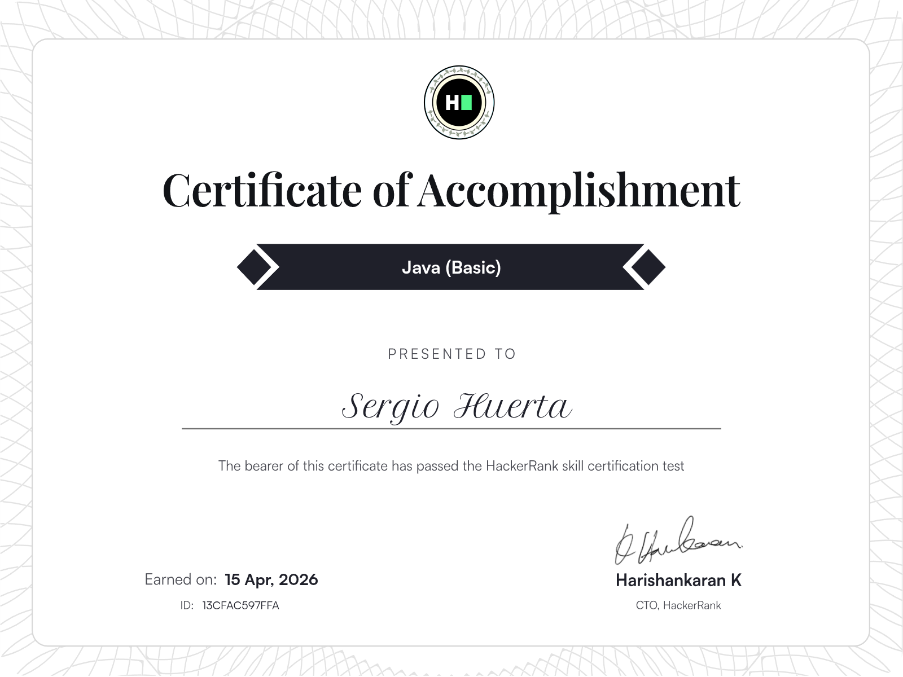
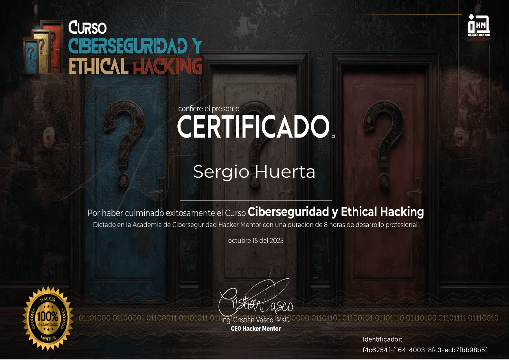
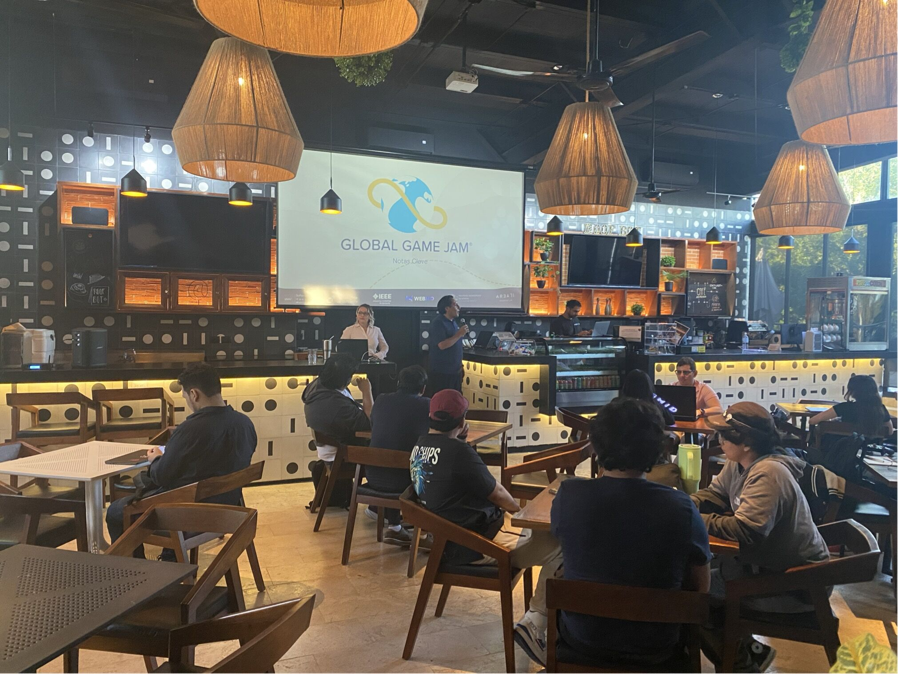
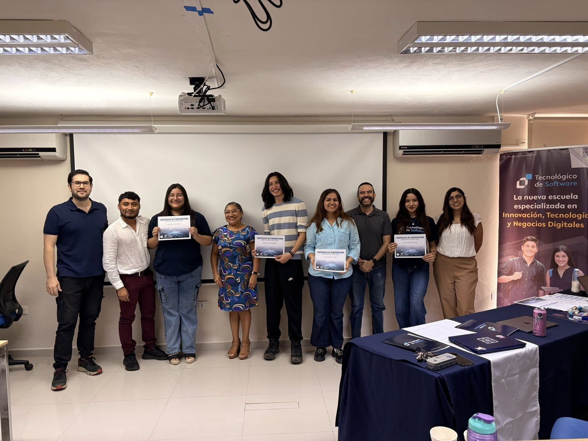

Certificaciones
Introduction to Cibersecurity

Java Basic

Curso Ethical Hacking

Cibersecurity Essencials (En proceso)
Trayectoria
Global Game Jam
Participación en la Global Game Jam: Desarrollo de la lógica de diálogos y decisiones usando el motor de unity. Enfoque en narrativa interactiva y estética experimental.

Invent for the planet
Diseño de un sistema circular de materiales centrado en el hogar. Colaboré en la creación de una propuesta para convertir desechos textiles en materiales de construcción. Mi rol implicó el análisis de datos técnicos y el desarrollo de la presentación del proyecto, destacando la viabilidad comercial y el impacto ambiental positivo.
